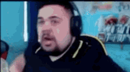

entri nel bagno segreto e dopo aver fatto pipi trovi ciccio gamer che è un po depresso perche non ha trovato il mastino lavico, allora decidi di aiutarlo regalandoli
le 104 gemme che avevi risparmiato dal 1995(quando è stato creato Evangelion) che erano proprio quelle che li servivano per comprare un ultimo baule magico
apre l'ultimo baule e trova il mastino lavico!!!!!!

sta gridando di gioia e tu intanto esci dalla finestra coperto dal rumore di Gerry che stava tagliando l'erba
ti saluta e ti chiede se l'Inter ha vinto, li rispondi di si e ti lascia passare
prima di ripartire ti da un po di social credits per l'informazione
comunque nel frattempo è salito Gianni nel sedile posteriore